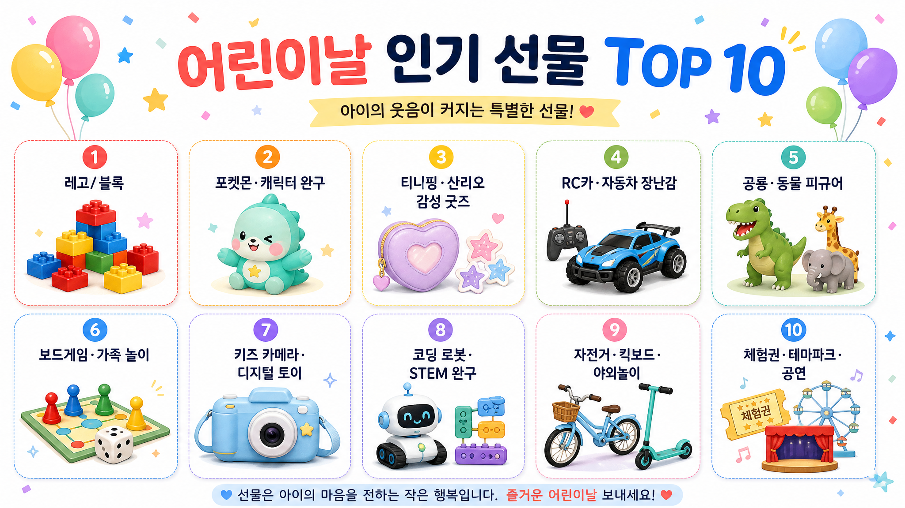

어린이날 인기 선물 Top10 보고서

핵심 결론
- 캐릭터 IP + 손으로 노는 완구가 여전히 1순위임
- 부모 만족도는 교육·STEM·보드게임 쪽에서 높음
- 아이 만족도는 캐릭터·블록·자동차·공룡처럼 즉시 몰입되는 물건이 강함
- 실패 확률을 낮추려면 연령보다 현재 빠져 있는 세계관을 기준으로 골라야 함
- 비싼 선물보다 같이 놀아주는 시간이 선물의 체감 가치를 키움
Top10 한 장 요약
| 순위 | 선물 카테고리 | 추천 이유 | 주의점 |
|---|---|---|---|
| 1 | 레고·블록 완구 | 창의력, 몰입, 재사용성 모두 좋음 | 작은 부품 분실·정리 부담 |
| 2 | 포켓몬·캐릭터 완구 | 아이 반응이 빠르고 실패 확률 낮음 | 유행 주기가 짧음 |
| 3 | 티니핑·산리오 감성 굿즈 | 캐릭터 애착·수집 욕구 강함 | 실사용성은 낮을 수 있음 |
| 4 | RC카·자동차 장난감 | 즉각적인 재미와 조작감이 큼 | 실내 소음·배터리 관리 필요 |
| 5 | 공룡·동물 피규어 | 역할놀이·상상놀이 확장성이 큼 | 이미 가진 종류와 중복 확인 |
| 6 | 보드게임·가족 놀이 | 부모와 함께 노는 시간이 선물이 됨 | 규칙이 너무 복잡하면 실패 |
| 7 | 키즈 카메라·디지털 토이 | 관찰·표현 욕구를 자극함 | 화면 사용 시간 관리 필요 |
| 8 | 코딩 로봇·STEM 완구 | 부모 만족도와 교육 효과가 높음 | 아이가 원하지 않으면 숙제처럼 느껴짐 |
| 9 | 자전거·킥보드·야외놀이 | 에너지 발산, 신체활동에 좋음 | 보호장비까지 같이 필요 |
| 10 | 체험권·테마파크·공연 | 기억에 오래 남는 선물 | 예약·동선·체력 변수 큼 |
1. 레고·블록 완구
블록은 어린이날 선물의 가장 안전한 축임 아이 입장에서는 만들기, 부수기, 다시 만들기가 반복되며 몰입이 오래 감 부모 입장에서도 창의력·공간지각·집중력 명분이 있어 구매 저항이 낮음
2. 포켓몬·캐릭터 완구
포켓몬, 티니핑, 산리오 같은 캐릭터 완구는 유통사 어린이날 행사에서도 반복적으로 전면에 나오는 핵심 카테고리임 아이 선물에서 캐릭터는 단순 장난감이 아니라 친구·세계관·역할놀이의 입구로 작동함 단점은 유행이 빠르고, 이미 비슷한 제품을 갖고 있을 가능성이 높다는 점임
3. 티니핑·산리오 감성 굿즈
감성 굿즈는 장난감보다 소유 만족이 큼 인형, 파우치, 문구, 스티커, 가방류처럼 일상에 붙는 물건일수록 만족도가 오래감 다만 남아/여아 구분보다 아이가 실제로 좋아하는 캐릭터인지가 훨씬 중요함
4. RC카·자동차 장난감
자동차·RC카는 조작하는 순간 바로 재미가 생김 선물 개봉 직후 반응이 좋은 편이고, 가족이 같이 레이스를 만들기도 쉬움 단점은 소음, 충전, 파손 가능성임
5. 공룡·동물 피규어
공룡은 오래 가는 스테디셀러임 티라노, 트리케라톱스, 브라키오처럼 역할이 분명한 캐릭터가 많아 아이가 스스로 이야기를 만들기 좋음 공룡책, 화산놀이, 보드게임으로 확장하기도 좋음
6. 보드게임·가족 놀이
보드게임은 물건보다 관계를 선물하는 쪽에 가까움 어린이날 이후에도 가족 놀이 루틴으로 남길 수 있다는 장점이 있음 핵심은 규칙이 쉬워야 한다는 점임
7. 키즈 카메라·디지털 토이
키즈 카메라는 아이가 보는 세계를 기록하게 해줌 사진 찍기, 영상 찍기, 꾸미기 기능은 표현 욕구가 강한 아이에게 잘 맞음 다만 화면 사용 시간이 늘어날 수 있어 사용 규칙을 함께 정해야 함
8. 코딩 로봇·STEM 완구
코딩 로봇, 과학 키트, 회로 완구는 부모가 가장 합리화하기 좋은 선물임 잘 맞는 아이에게는 탐구 습관을 만들 수 있음 하지만 아이가 원하지 않으면 선물이 아니라 공부 도구처럼 느껴질 수 있음
9. 자전거·킥보드·야외놀이
야외놀이 선물은 에너지가 많은 아이에게 강함 자전거, 킥보드, 인라인, 캐치볼류는 사용 시간이 길어질 수 있음 선물 예산에는 헬멧·보호대까지 포함해서 봐야 함
10. 체험권·테마파크·공연
체험형 선물은 사진보다 기억에 남음 테마파크, 키즈카페, 뮤지컬, 체험전, 호텔 수영장 같은 경험은 물건보다 오래 회상될 수 있음 다만 어린이날 전후 혼잡도가 높아 예약과 이동 동선이 핵심임
반대 의견과 리스크
- 인기 선물 순위만 따라가면 아이가 이미 가진 것과 중복될 수 있음
- 교육 완구는 부모 만족도가 높아도 아이 만족도가 낮을 수 있음
- 캐릭터 완구는 반응은 빠르지만 유행이 식으면 방치될 수 있음
- 어린이날 당일 외출형 선물은 혼잡, 대기, 피로 때문에 만족도가 떨어질 수 있음
- 비싼 선물일수록 아이보다 부모의 기대가 더 커질 수 있음
최종 추천
| 아이 성향 | 1순위 추천 | 이유 |
|---|---|---|
| 만들기 좋아함 | 레고·블록 | 오래 놀고 확장 가능함 |
| 캐릭터 몰입형 | 포켓몬·티니핑·산리오 | 즉시 반응이 좋음 |
| 활동량 많음 | 자전거·킥보드·RC카 | 에너지 발산 가능 |
| 상상놀이 좋아함 | 공룡·동물 피규어 | 이야기 만들기 좋음 |
| 가족놀이 좋아함 | 보드게임·체험권 | 함께 노는 시간이 핵심 |
| 호기심 강함 | 코딩 로봇·과학 키트 | 탐구 욕구 자극 |
출처
- 이마트 어린이날 완구 행사 관련 보도: https://www.news1.kr/industry/distribution/6147044
- 이데일리 어린이날 완구 할인 보도: https://www.edaily.co.kr/News/Read?newsId=02122166645419400
- 한국경제 어린이날 캐릭터 완구 보도: https://www.hankyung.com/article/2026042946091
- ZDNET Korea 어린이날 장난감 할인 보도: https://zdnet.co.kr/view/?no=20260423172634
Jeremy's Insight by 🤖 딸깍봇 https://blog.naver.com/jeremylee0213